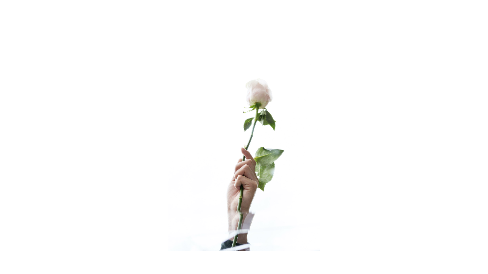
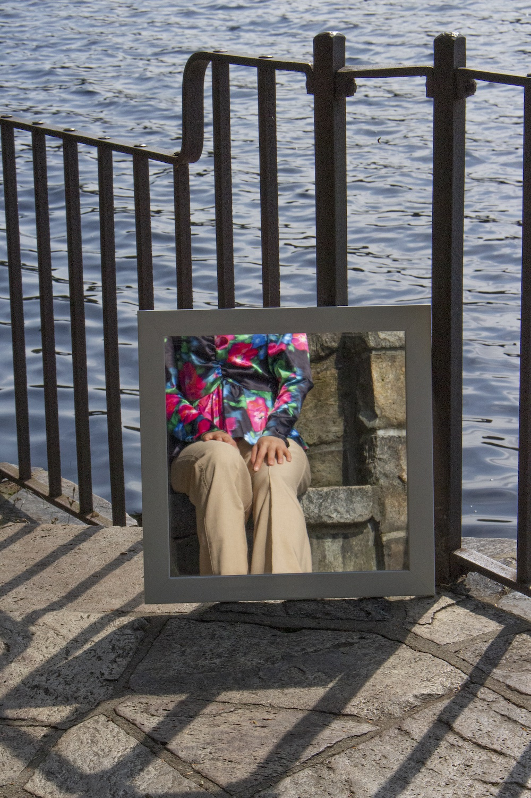
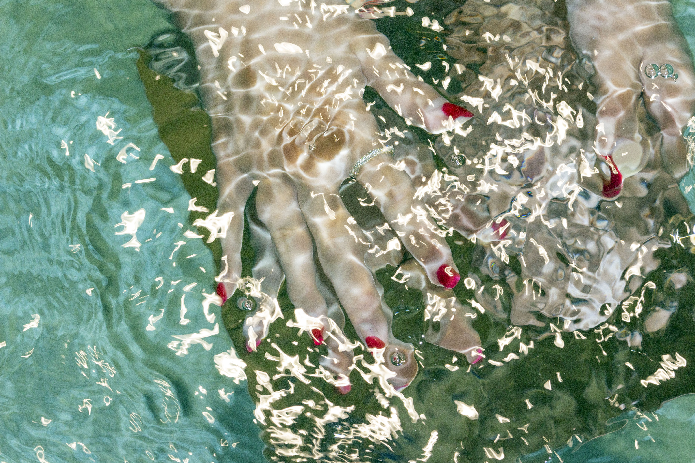
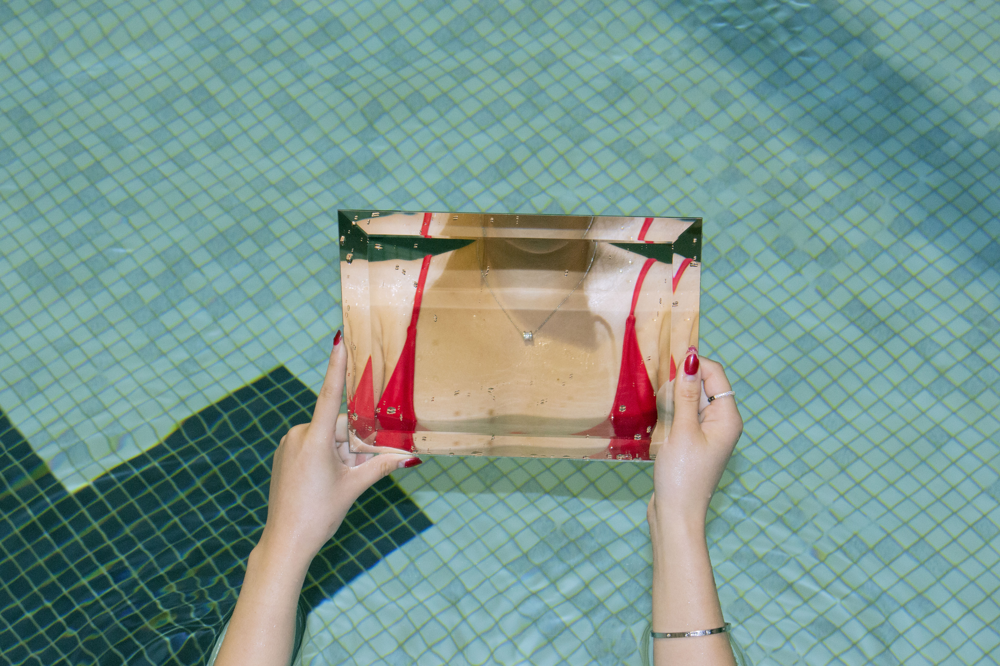
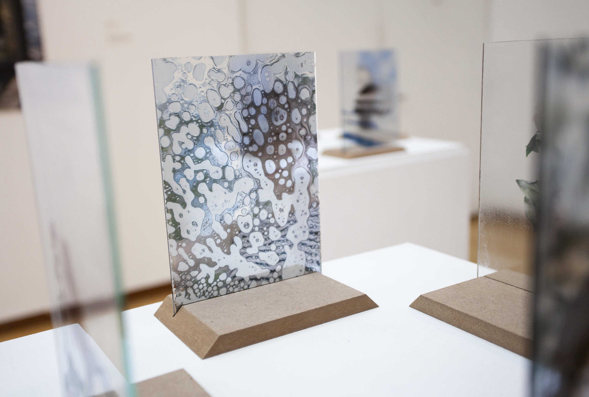
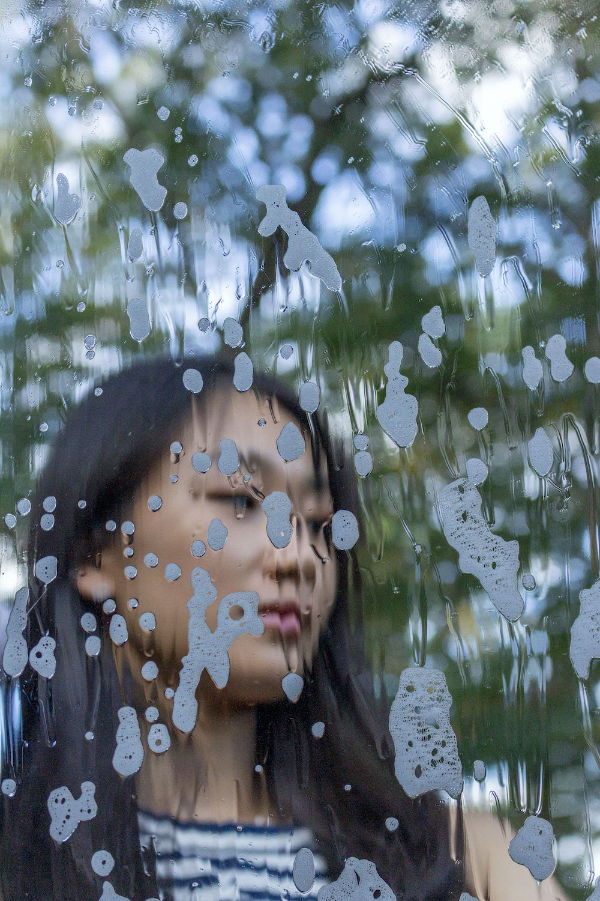

Fragmented Realities
Fragmented Realities explores how individuals participate in a world filled with trick mirrors. During the pandemic I spent a lot of time alone and hyper-fixated on the world around me. Going online, the tensions felt higher than ever before. My work seeks to reconcile the feelings of fragmentation, reflection, and presentation. Fragmented Realities is about being seen, being hidden, and being in a world that is closer but simultaneously farther apart than ever before.




